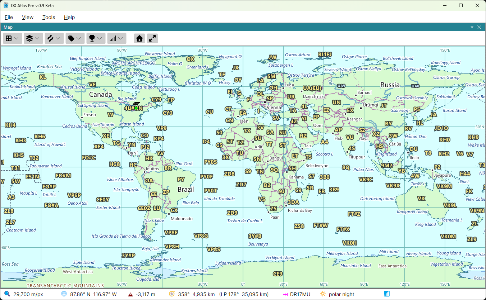

DXCC Entities and Prefixes

On the Map
The first four checkboxes of the Amateur Radio button draw the DXCC entities and their subdivisions. Each one switches a set of boundaries and its prefix labels together:
- DXCC Entities - the borders of all 340 current DXCC entities, and their prefixes. The borders between countries that are also DXCC entities are drawn by Political Boundaries in the Lines menu as well, so the two can be shown separately;
- Call Areas - the call areas of the larger entities, such as W4 or VE3, and their prefixes;
- Provinces - the provinces, states and oblasts that have prefixes of their own, and their prefixes. Call Areas and Provinces are available only while DXCC Entities is on;
- WAE Entities - the countries of the DARC's Worked All Europe list, such as the Shetland Islands (GM/s) or Sicily (IT9), and their prefixes. While it is on, the WAE borders replace the DXCC, call area and province boundaries, so WAE Entities and DXCC Entities are never on together: ticking one clears the other.
Hover the mouse over a prefix to see the name of its entity, province or call area; for a call area, its definition. Click a prefix to see its Item Details: the prefix, the CQ and ITU zones, the continent, the ADIF number and the local time.
In the Lists Panel
The DXCC entities layer of the Lists Panel lists the entities as a tree: each DXCC entity, the call areas under it, and the provinces under them, as the prefixes are structured. The Prefix column shows each one's prefix, and the triangle before it opens and closes its rows. Type a callsign in the Search box to find its entity; see Prefix Search.
With a list selected, only the DXCC entities have checkboxes: a DXCC list is a list of entities, and the call areas and provinces under them are there to be looked up. See Award Tracking.
The WAE countries layer lists the WAE countries by their prefixes, and the WAS layer the 50 US states, Alaska and Hawaii among them, for the Worked All States award.
DXCC is a trademark of the ARRL; the DXCC entity list is reprinted with the permission of the ARRL. For the DXCC programme and its rules, see www.arrl.org/dxcc.